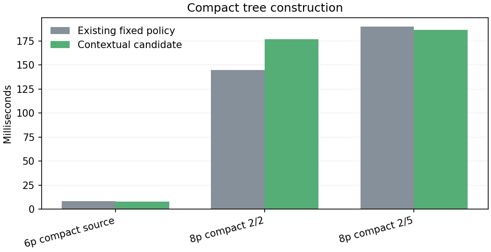
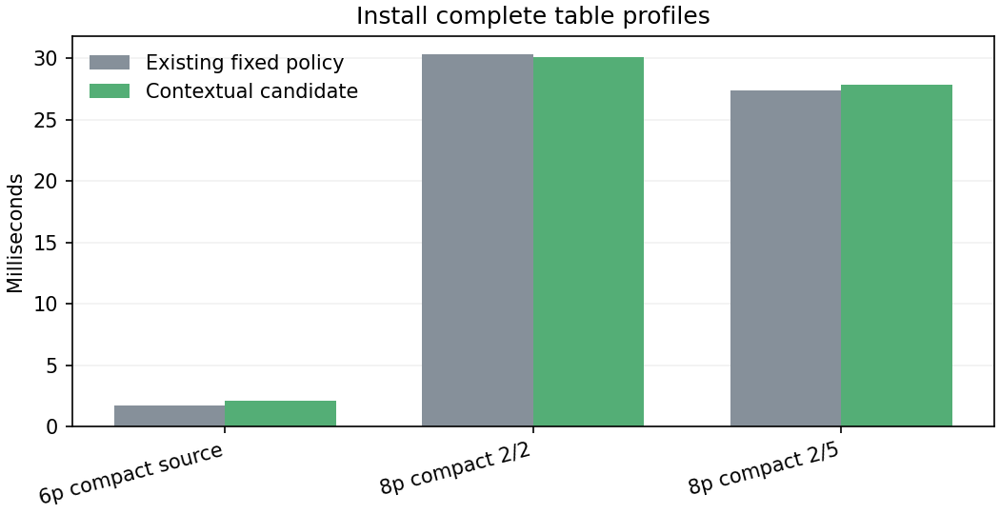
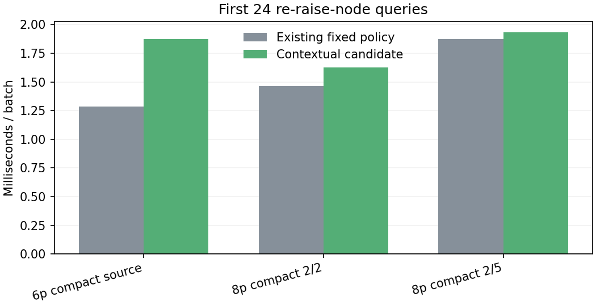
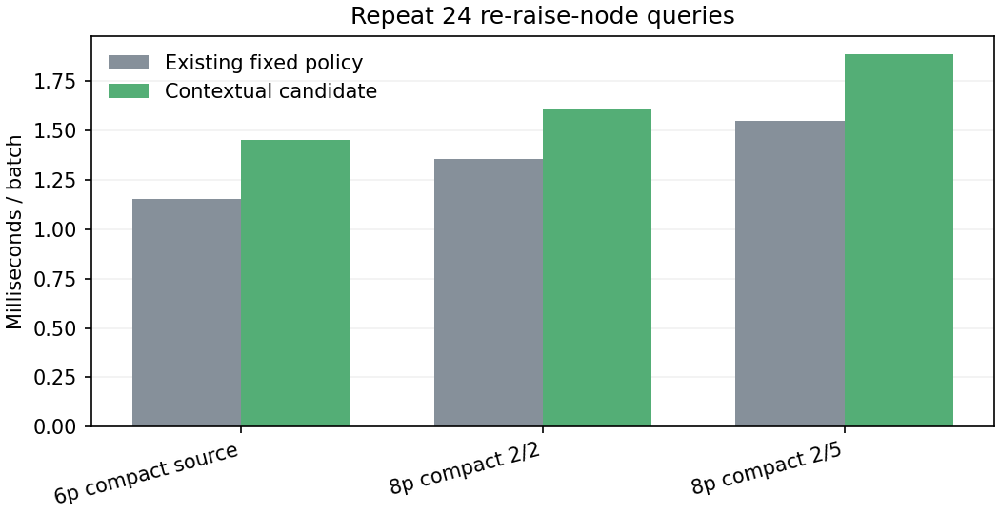
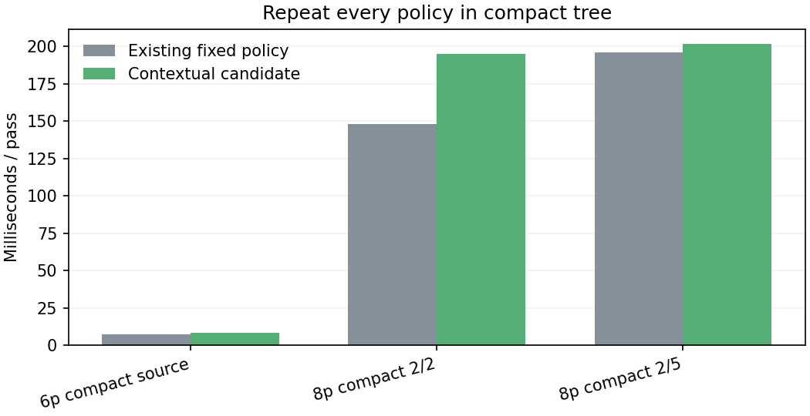
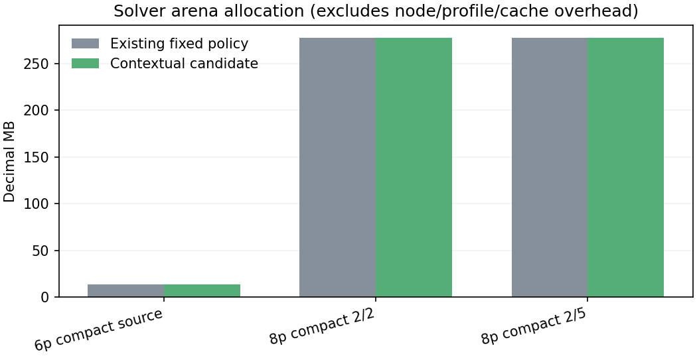
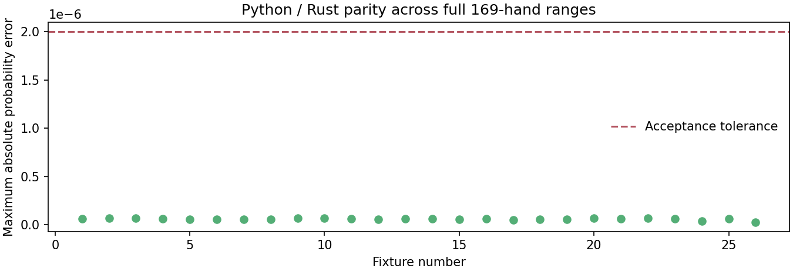

First baseline/candidate measurements. These charts compare two implementations; they do not invent a historical improvement trend. Each run is retained in history.json.
Prediction quality is retrospective, previously inspected data. Timing fixtures use compact menus and synthetic aggregate profiles; they are not full saved scenarios or solving-speed/EV claims. Unsupported blind/table conditions retain the existing policy. Model bytes: 296017.










